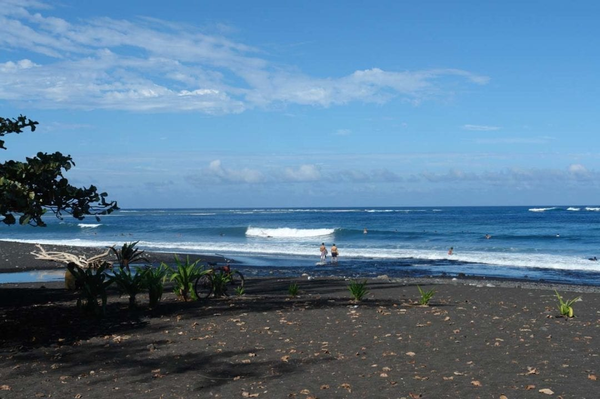

Intermediate Surf Spot
Intermediate LevelReady to take your surfing to the next level? Embouchure Papara offers the perfect stepping stone between beginner waves and more challenging breaks. This spot provides consistent, medium-sized waves that will help you refine your technique and build the skills needed for advanced surfing.

Embouchure Papara
Located at the river mouth in Papara, this spot offers consistent waves that break over a mix of sand and reef. The waves here are more powerful than beginner spots but still forgiving enough to practice new maneuvers. It's an excellent place to work on your bottom turns and learn to read more complex wave patterns.
Embouchure Papara is best surfed during the morning when winds are calm. The wave typically offers both left and right options, allowing you to practice on your preferred side. Local surfers recommend this spot for those transitioning from foam boards to fiberglass.